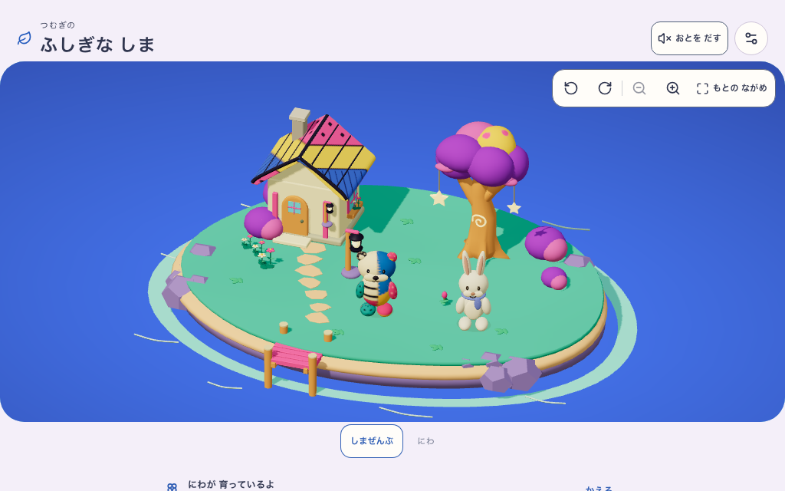
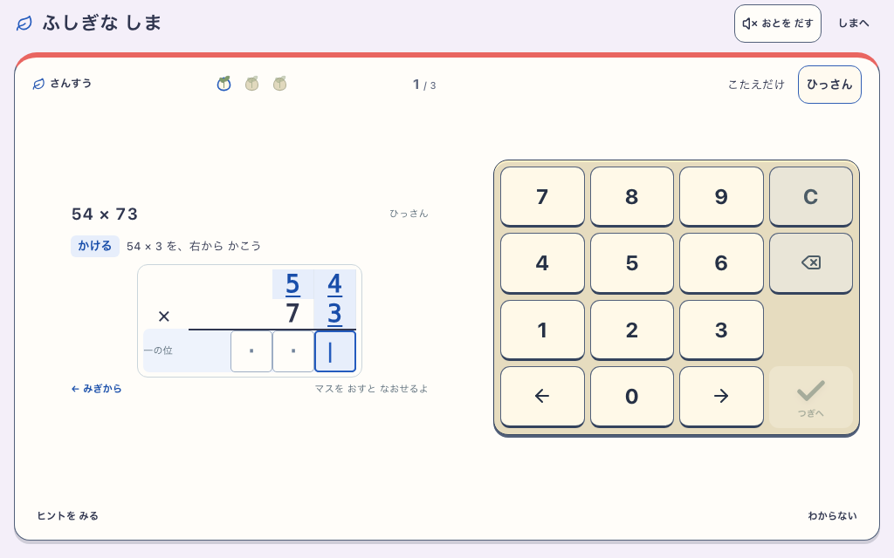
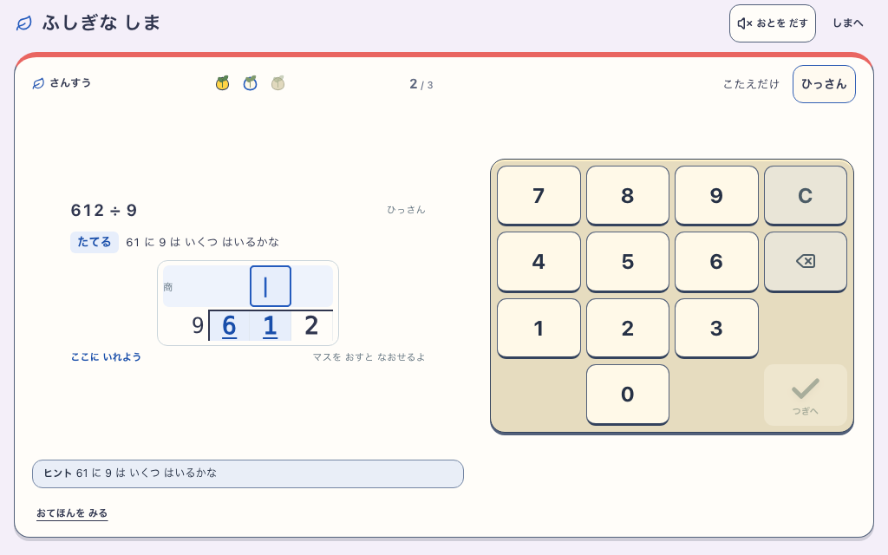
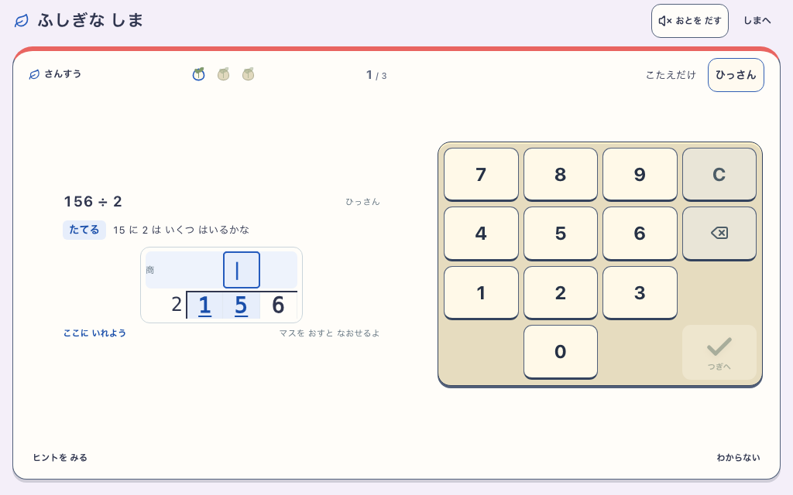
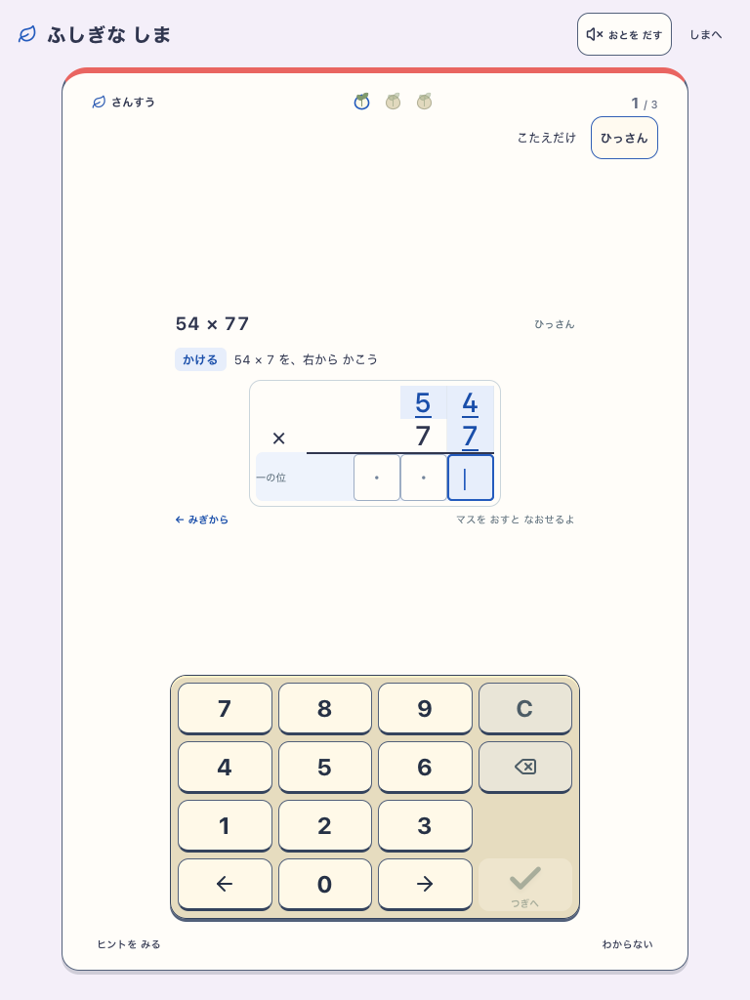
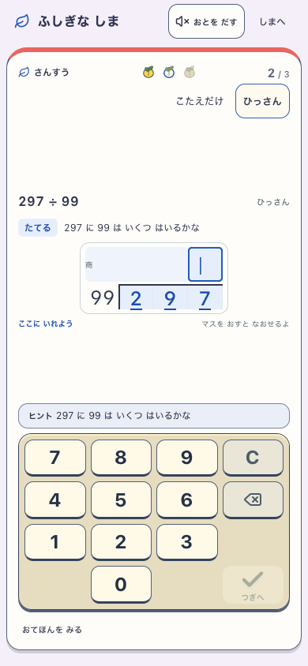
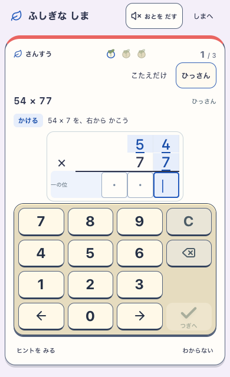
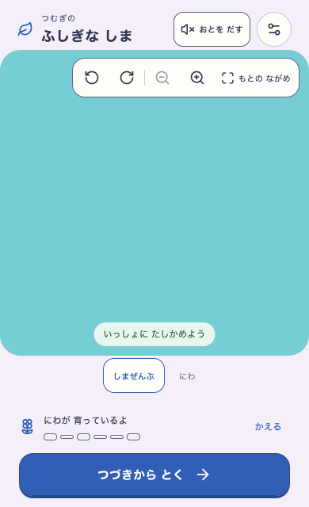

学習中は島を隠し、問題と入力に表示領域を使います。ヒントや長い筆算でも、全テンキーと支援操作をスクロールなしで押せます。島の表示は「しまへ」で戻ります。
固定ローカルビルド 463508f-local-learning-focus:27916efa-a7f9-4982-b9a2-4d4544e9d8c8
Chromium / WebKit・7画面サイズ・7種類の開始問題で確認。実機iPadの観察ではありません。







